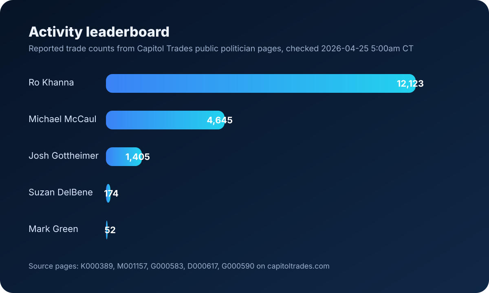
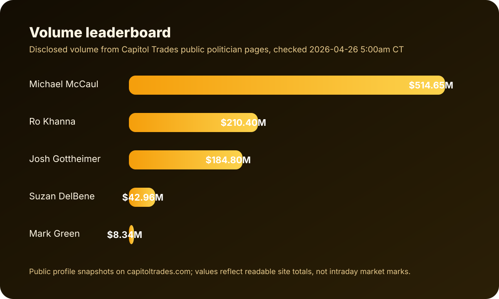

Compiled from Capitol Trades public editorial summaries and site search snippets, last checked 2026-04-20.
| Rank | Name | Why included | Activity signal | Volume signal |
|---|---|---|---|---|
| 1 | Michael McCaul | Explicitly identified as biggest by volume in Capitol Trades article | 6,632 trades in past 3 years | Hundreds of millions of dollars |
| 2 | Ro Khanna | Most active by count, also listed among most active in 2023 | 13,000+ trades in past 3 years | Lower volume than McCaul |
| 3 | Suzan DelBene | Much lower count, but repeatedly larger disclosed position sizes | 187 trades in past 3 years | Single trades up to $5M to $25M |
| 4 | Josh Gottheimer | High-volume pattern with many large Microsoft trades | 1,260 trades since 2019 | Most likely exceeds $100M |
| 5 | Mark Green | Frequently watched active trader in Capitol Trades summary | 600+ trades in past 3 years | Meaningful but below top tier here |

